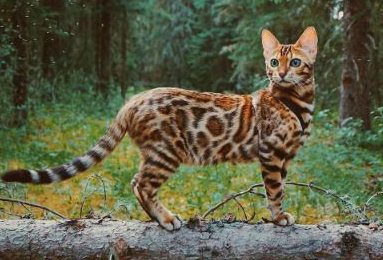

Overview
The Bengal could never be called delicate. With his distinctive spotted coat and large size, the Bengal looks like a wild cat on the prowl, but although one of his ancestors is the small, wild Asian leopard cat, he’s a domestic cat through and through. Bengals take their name from the Asian leopard cat’s scientific name, Felis bengalensis. They were created through crosses between an Asian leopard cat — which in the 1950s and into the 1960s could be purchased at pet stores — and domestic shorthairs. Jean Mill, a breeder in California, was the first to make such a cross, but not because she wanted to create a new breed. She had acquired a leopard cat and allowed her to keep company with a black tom cat so she wouldn’t be lonely. To her surprise, since she hadn’t thought the two species would mate, kittens resulted, and Mill kept a spotted female.
Read more from Cat TimePersonality
The Bengal is highly active and highly intelligent. This makes him fun to live with, but he can sometimes be challenging. On the whole, the Bengal is a confident, talkative, friendly cat who is always alert. Nothing escapes his notice. He likes to play games, including fetch, and he’s a whiz at learning tricks. His nimble paws are almost as good as hands, and it’s a good thing he doesn’t have opposable thumbs or he would probably rule the world. A tall cat tree or two is a must for this feline, as are puzzle toys that will challenge his intelligence. On the rare occasions that he isn’t swinging on chandeliers or swimming in your pool, the affectionate Bengal will be pleased to sit on your lap. It goes without saying that he will share your bed. And yes, he steals the covers.
Read more from Cat TimeCare
The short, thick coat of the Bengal is easily cared for with weekly combing to remove dead hair and distribute skin oils. A bath is rarely necessary. Brush the teeth to prevent periodontal disease. Daily dental hygiene is best, but weekly brushing is better than nothing. Trim the nails every couple of weeks. Wipe the corners of the eyes with a soft, damp cloth to remove any discharge. Use a separate area of the cloth for each eye so you don’t run the risk of spreading any infection. Check the ears weekly. If they look dirty, wipe them out with a cotton ball or soft damp cloth moistened with a 50-50 mixture of cider vinegar and warm water. Keep the litter box spotlessly clean. It’s a good idea to keep a Bengal as an indoor-only cat to protect him from diseases spread by other cats, attacks by dogs or coyotes, and the other dangers that face cats who go outdoors, such as being hit by a car.
Read more from Cat Time